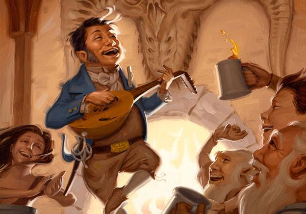
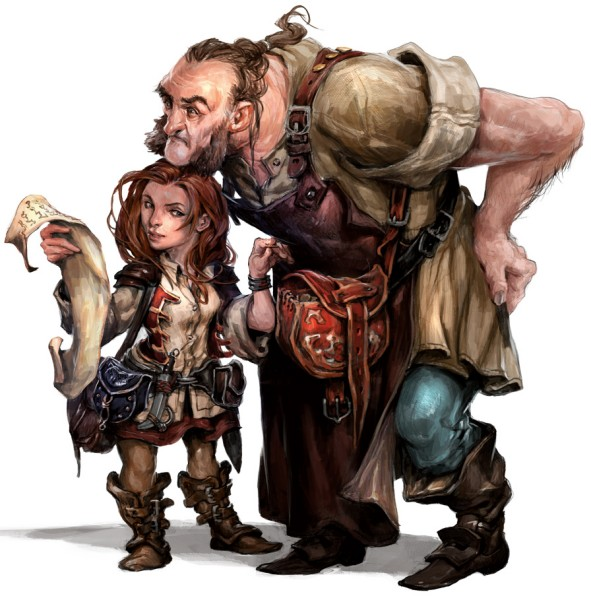

Halfelin
Le confort à la maison est ce à quoi aspirent la plupart des halfelins : un endroit où s’installer dans une paix sereine, loin des monstres errants et des confrontations armées ; un feu ardent et un repas copieux ; un breuvage fin et une conversation raffinée. Bien que certains halfelins vivent leurs jours isolés dans des communautés agricoles, d’autres forment des bandes nomades en constant déplacement, attirés par les grands chemins et les vastes horizons pour découvrir les merveilles de nouvelles terres et de nouveaux peuples. Mais même ces itinérants aiment la paix, la nourriture, un foyer et un chez-soi, même si ce chez-soi est un chariot cahotant sur une route poussiéreuse ou un radeau flottant au gré du courant.
Petits et pragmatiques
Regis l’halfelin, l’unique représentant de sa race à des centaines de kilomètres à la ronde, croisa les doigts derrière sa tête et s’adossa contre le tapis moussu d’un tronc d’arbre. Regis était petit, même aux yeux de ceux de sa toute petite race, si bien que le duvet de sa chevelure brune et bouclée atteignait à peine la marque des trois pieds. Mais son ventre était bien rebondi par son affection pour un bon repas, voire plusieurs, selon les occasions qui se présentaient à lui. Le bâton sinueux qui lui servait de canne à pêche s’élevait au-dessus de lui, coincé entre deux de ses orteils, et suspendu au-dessus d’un lac tranquille, se reflétant parfaitement sur la surface vitreuse du Maer Dualdon.
- R.A. Salvatore, L’Éclat de cristal
Les tout petits halfelins survivent dans un monde rempli de créatures plus grandes qu’eux en évitant d’être remarqués ou en évitant les offenses. Mesurant près de 90 cm, ils paraissent plutôt inoffensifs et ainsi, ils ont réussi à survivre depuis des siècles à l’ombre des empires et en marge des guerres et des remous politiques. Ils ont tendance à être trapus, pesant entre 18 et 20 kg.
Les halfelins ont un teint de peau variant de bronzé à pale avec un ton rougeaud. Leur chevelure est habituellement brune ou sablée et bouclée. Ils ont les yeux bruns ou de couleur noisette. Les hommes halfelins portent souvent de longues rouflaquettes, mais la barbe est rare et la moustache, encore plus. Ils aiment les vêtements simples, confortables et pratiques, préférablement de couleurs vives.
Le pragmatisme des halfelins va au-delà de leur habillement. Ils se soucient des besoins de base et des plaisirs simples. Ils n’ont aucun intérêt à l’ostentation. Même le plus riche des halfelins garde ses trésors sous clé, dans un cellier plutôt qu’à la vue de tous. Ils ont un don pour trouver les solutions les plus simples aux problèmes et ont peu de patience pour l’indécision.
Aimables et curieux
Les halfelins sont des gens affables, chaleureux et joyeux. Ils chérissent les liens de famille et l'amitié ainsi que le confort du foyer, n’entretenant que peu de rêves d'or et de gloire. Les plus téméraires parmi eux s'aventurent généralement dans le monde pour des raisons liées à la communauté, l’amitié, l’envie de voyager ou la curiosité. Ils aiment découvrir de nouvelles choses, même les plus simples, comme une nourriture exotique ou un style particulier de vêtements. Les halfelins sont aisément émus par la pitié et ils détestent voir la souffrance d’un être vivant. Ils sont généreux et partagent sans compter, même dans les temps plus difficiles.
Se fondre dans la foule
Les halfelins sont aptes à s'insérer dans une communauté d'humains, de nains ou d’elfes, en se rendant utiles et bienveillants. La combinaison de leur discrétion innée et de leur nature modeste contribue à éviter une attention non désirée. Ils collaborent promptement avec les autres et sont très fidèles à leurs amis, qu’ils soient halfelins ou non. Mais ils peuvent aussi se montrer remarquablement féroces quand leurs amis, leurs familles ou leurs communautés sont menacés.
Traditions pastorales
La plupart des halfelins vivent dans de petites communautés pacifiques avec de grandes exploitations agricoles et des bosquets bien gardés. Ils n'ont jamais construit un royaume de leur propre chef ni même possédé beaucoup de terres au-delà de leurs comtés tranquilles. Ils ne reconnaissent pas la noblesse et la royauté, préférant les conseils des anciens de la famille pour les guider. Cet accent mis sur la famille et la communauté a permis aux halfelins de maintenir leurs traditions durant des milliers d'années, sans être affectés par l’ascension et la chute des empires.
AFFABLES ET POSITIFS
Les halfelins tentent de s’entendre avec tout le monde et hésitent longuement avant de faire de quelconques généralisations, surtout si elles sont négatives.
Nains. « Les nains sont de loyaux amis. Vous pouvez compter sur eux pour tenir parole. Mais un sourire de temps en temps, ça ne leur ferait pas de mal. N’est-ce pas ? ».
Elfes. « Quelle beauté ! Leurs visages, leur musique, leur grâce, et le reste. On pourrait croire qu’ils sortent tout droit d’un rêve merveilleux. Mais impossible de savoir ce qui se trame derrière ce visage souriant, sûrement plus qu’ils ne laissent paraître ».
Humains. « Les humains nous ressemblent tellement. Quelques- uns d’entre eux, à tout le moins. Mettez le nez hors des châteaux et des donjons. Discutez avec les fermiers et les éleveurs et vous y trouverez des gens bien, des gens solides. Non pas que les barons et les soldats soient des gens mauvais, vivre selon ses convictions est tout à fait admirable. En protégeant leurs terres, ils nous protègent également ».
Beaucoup de halfelins vivent parmi les autres races, où leur travail acharné et leur fidélité leur offrent de bonnes récompenses et le confort. Certaines communautés considèrent le voyage comme un mode de vie, conduisant des chariots ou guidant des embarcations d'un endroit à l’autre sans posséder un domicile fixe.
Exploration opportuniste
Les halfelins qui ont pris le chemin de l'aventure l’ont généralement fait pour défendre leurs communautés, aider leurs amis ou explorer un vaste et merveilleux monde. Pour eux, l'aventure est moins une carrière qu’une chance ou une nécessité.
Noms halfelins
Un halfelin possède un prénom, un nom de famille et parfois un surnom. Les noms de famille sont souvent des surnoms qui ont si bien collé qu'ils ont été transmis durant des générations.
Noms masculins : Alton, Ander, Cade, Corrin, Eldon, Errich, Finnan, Garret, Lindal, Lyle, Merric, Milo, Osborn, Perrin, Reed, Roscoe, Wellby.
Noms féminins : Andry, Bree, Callie, Cora, Euphémie, Jillian, Kithri, Lavinia, Lidda, Merla, Nedda, Paela, Portia, Séraphine, Shaena, Trym, Vani, Verna.
Noms de famille : Bonbaril, Feuilledethé, Grandpré, Hautecolline, Lancepavé, Pasdépines, Ramassebrosse, Roulecolline, Souslabranche, Vertbouteille.
Traits
Un halfelin possède de nombreux traits en commun avec tous les autres halfelins.
Augmentation de caractéristiques. Votre Dextérité augmente de 2.
Âge. Un halfelin atteint l'âge adulte à 20 ans et a une longévité de 150 ans environ.

Taille. Les halfelins mesurent environ 90 cm de haut pour un poids aux alentours de 18 kg. Votre taille est Petite (P).
Vitesse. Votre vitesse de base est de 7,50 mètres.
Chanceux. Lorsque vous obtenez un 1 au dé d'un jet d'attaque, de caractéristique ou de sauvegarde, vous pouvez relancer le dé et devez alors utiliser ce nouveau résultat.
Brave. Vous avez un avantage aux jets de sauvegarde pour ne pas être effrayé.
Agilité halfeline. Vous pouvez passer dans l'espace de toute créature d'une taille supérieure à la vôtre.
Langues. Vous pouvez parler, lire et écrire le commun et le halfelin. La langue halfeline n'est pas secrète, mais les halfelins sont réticents à la partager avec d'autres. Ils écrivent très peu, et par conséquent ne possèdent pas un riche corpus de littérature. Leur tradition orale, cependant, est très forte. Presque tous les halfelins parlent le commun pour converser avec les gens qui partagent les terres qu'ils habitent ou sur lesquelles ils voyagent.
Sous-race. Les pied-légers et les robustes sont plutôt deux branches d'une même famille que réellement des sous-races. Choisissez l'une des subdivisions proposées ci-après.
Halfelin pied-léger
En tant que halfelin pied-léger, vous pouvez facilement vous cacher, en utilisant même d'autres personnes comme abri. Vous avez tendance à être affable et à bien vous entendre avec les autres. Les halfelins pied-léger sont ceux qui ont le plus migré et sont donc la sous-race la plus commune. Ils sont les plus enclins à voyager de tous les halfelins, et vivent souvent avec d'autres races ou embrassent une vie de nomade.
Augmentation de caractéristiques. Votre Charisme augmente de 1.
Discrétion naturelle. Vous pouvez tenter de vous cacher si vous vous trouvez derrière une créature d'une taille supérieure à la vôtre.
Halfelin robuste
En tant que halfelin robuste, vous êtes plus costaud que la moyenne et possédez une certaine résistance au poison. Certains disent que les robustes ont du sang nain. Aussi appelés halfelins vaillants, ce sont les plus communs au sud des Royaumes Oubliés.
Augmentation de caractéristiques. Votre Constitution augmente de 1.
Résistance des robustes. Vous obtenez un avantage aux jets de sauvegarde contre le poison et la résistance contre les dégâts de poison.
Traduit par Puncho et blueace